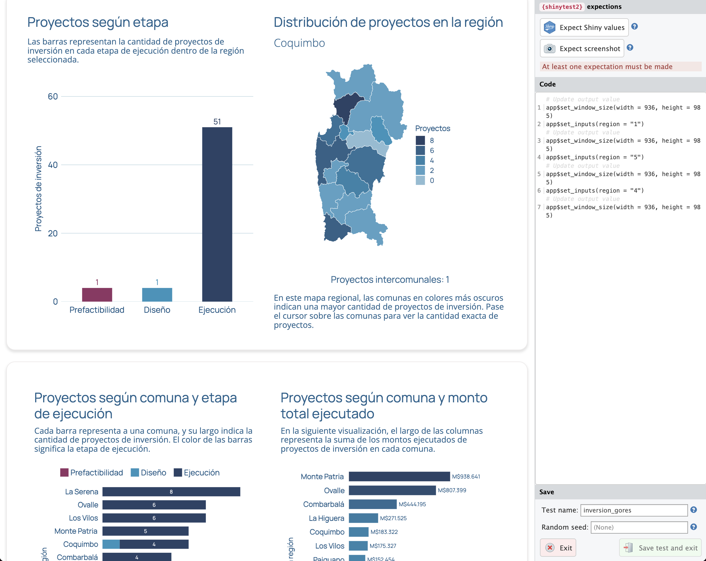

Testeo automatizado de aplicaciones Shiny con {shinytest2}
2/11/2025
Índice
Al igual que la validación de datos, validar aplicaciones te permite crear un conjunto de pruebas para confirmar que tus aplicaciones funcionan bien sin tener que probarlas manualmente. En la práctica, puedes programar un bot que apriete todos los botones de tu aplicación y obtener capturas de pantalla que te confirmen que todo se ve bien, o realizar otros tipos de pruebas más complejas.
En esta guía aprenderás a utilizar {shinytest2} para automatizar el testeo de tus aplicaciones Shiny, asegurando su correcto funcionamiento a través de capturas de pantalla y otras validaciones automáticas.
Primero que nada, instalamos el paquete:
install.packages("shinytest2")
Empezar a usar {shinytest2}
Hay dos formas de empezar con los tests en tu app Shiny.
La primera opción es crear la infraestructura necesaria, ejecutando use_shinytest2() e indicando la carpeta donde está tu app:
shinytest2::use_shinytest2(app_dir = "app/inversion_gores/")
Este comando solamente crea las carpetas de tests que son básicas para
validación con {testthat}, pero no crea ningún test en particular.
La segunda opción, y recomendada, es empezar
shinytest2::record_test("app/inversion_gores/")
Además de crear la infraestructura necesaria, este comando abre tu aplicación Shiny en un navegador para que grabes tus interacciones con la app para generar automáticamente tu primer test.
Presiona los inputs de tu aplicación para navegar por ella, y elige uno de los botones de la parte superior para esperar (expect) que tu app retorne un valor (Expect Shiny value) o genere una captura de pantalla (Expect screenshot). Contra estas expectativas se evaluará el funcionamiento de tu app.
Cuando termines de simular una visita a tu app presiona Save test and exit. Esto generará automáticamente un archivo de pruebas en la carpeta tests/testthat/ de tu aplicación Shiny, que se abrirá y de inmediato ejecutará la prueba en el fondo; es decir, tu app se ejecutará de manera invisible reproduciendo los pasos que tomaste.
De esto se trata la validación de aplicaciones: programar interacciones con tu aplicación para evaluar que siemrpe retorne los valores esperados.
Estructura de carpetas
En la carpeta de tu app tendrás la carpeta tests. Dentro está testthat.R, que contiene la función shinytest2::test_app(), con la que puedes ejecutar todas tus pruebas.
Dentro de la carpeta testthat/ estarán todos los archivos de tests que hayas grabado o creado manualmente, que siguen la estructura test-x.R. Puedes agregar los tests que necesites.
Además, dentro de tests/testthat/ está _snaps, que contiene las capturas de pantalla tomadas en cada prueba.
Aquí hay un ejemplo de las carpetas de una app mía:
inversion_gores/
|-- app.R
|-- funciones.R
|-- styles.css
+-- tests/
|-- testthat.R
+-- testthat/
|-- setup-shinytest2.R # archivo necesario
|-- test-mapas.R # test para probar mapas
|-- test-tablas.R # test para probar tablas
+-- _snaps/ # carpeta con pantallazos
+-- mac-4.4/
+-- test-mapas/
|-- test-mapas-001.png
|-- test-mapas-002.png
|-- ...
+-- test-tablas/
|-- test-tablas-001.png
|-- test-tablas-002.png
|-- ...
Creando una prueba para tu app
Para empezar, puedes basarte en el test que se genera al simular y grabar tu interacción con shinytest2::record_test(), o crear un test manualmente.
library(shinytest2)
test_that("{shinytest2} recording: inversion_gores_2", {
app <- AppDriver$new(variant = platform_variant(), name = "test-tablas",
height = 985, width = 1254)
# cambiar de pestaña
app$set_inputs(tabs = "Tabla", allow_no_input_binding_ = TRUE)
# cambiar un input
app$set_inputs(region = "2")
# esperar a que la app haya cargado
app$wait_for_idle(200)
# tomar pantallazo
app$expect_screenshot()
})
Dentro de la carpeta tests/testthat/_snaps se pueden encontrar los resultados de los pantallazos producidos durante el test con app$expect_screenshot()
Podemos inspeccionar visualmente las capturas para corroborar que la aplicación funciona correctamente (asegurarnos que todos los outputs se vean, que la disposición de la app es visualmente correcta), pero también la prueba nos avisará si las capturas de pantalla nuevas difieren de las anteriores, lo que significaría un cambio en los resultados.
Automatizar tests repetitivos
Si tienes una lista con los valores de uno o varios inputs que quieres testear, puedes correr las pruebas en un loop que repita la prueba para cada elemento.
De ser necesario, dentro del test puedes cargar datos que te entreguen la lista de inputs (por ejemplo, los valores únicos de una variable)
# por cada variable, navegar y captura de pantalla
for(i in variables) {
app$set_inputs(indicador_lista = i)
app$wait_for_idle(200)
app$expect_screenshot()
}
Para ejecutar todos los tests
shinytest2::test_app("app/icbg/")